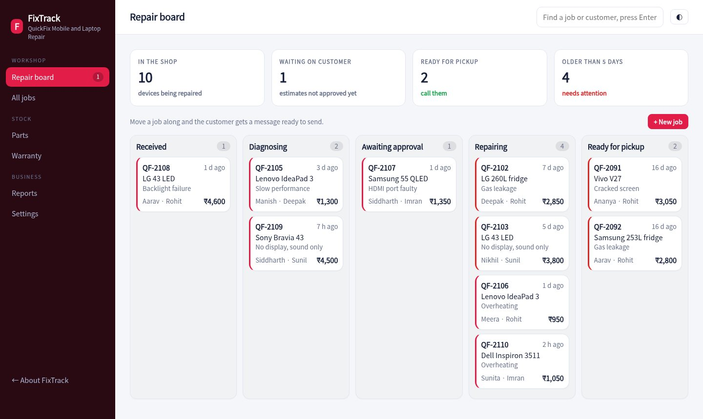
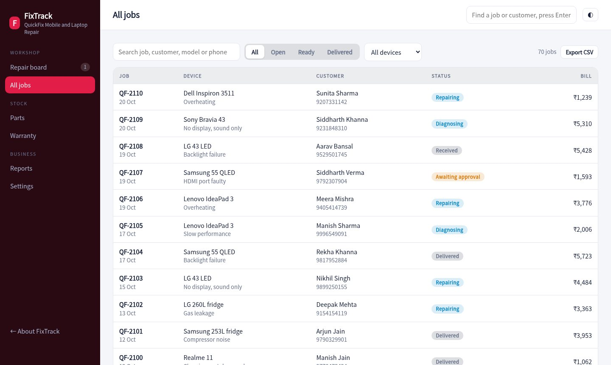
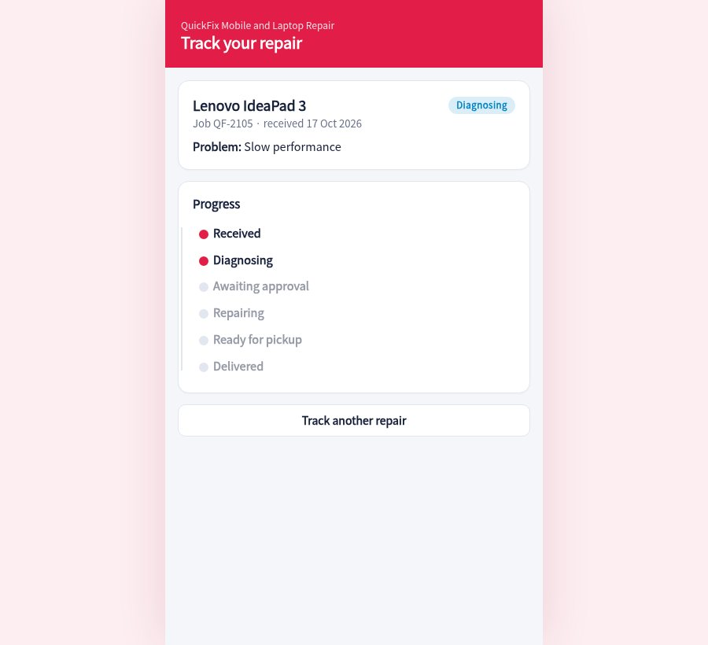

Every repair gets a job card and a tracking page. Customers approve estimates from their phone, you move jobs along a board, and the invoice and warranty are ready at delivery.

Customer, device, serial, problem, accessories received, estimate and advance in one form. A job code is generated for the customer.
Received, diagnosing, awaiting approval, repairing and ready, with each job coloured red once it is older than five days.
The tracking link shows progress and lets the customer approve the estimate. The job moves to repairing straight away.
Add parts to a job and stock drops. Low stock and margins show on the parts screen.
Labour and parts with 18% GST, advance adjusted, payment mode recorded and the warranty period printed.
Every delivered repair carries a warranty. If it comes back, log a claim and the job reopens on the board.
Five columns by stage, with technician, estimate and age on every card. Moving a job offers a ready-written WhatsApp update.
Find any repair by job code, name, phone or model. Open it to see the timeline, parts, bill and warranty.

Customers open their link, see the stage and approve the estimate. When the device is ready the page tells them what to pay.

Fill the form and hand over the job code. Send the tracking link on WhatsApp.
Add parts and labour, send the estimate and wait for approval from the customer's phone.
Move the job along, collect the balance, print the invoice and start the warranty.
Sample pricing for this concept build.
No. They open a link on their phone to see the status and approve the estimate.
Yes. Device types and issues are configurable. The demo covers mobiles, laptops, TVs, ACs and fridges.
When a job is delivered, a warranty period starts. The warranty screen lists repairs still covered and lets you log a claim.
No. Customers, devices and jobs are generated for a made-up repair shop.
Create a job, send it for approval from the customer page and then deliver it.
Open the repair board